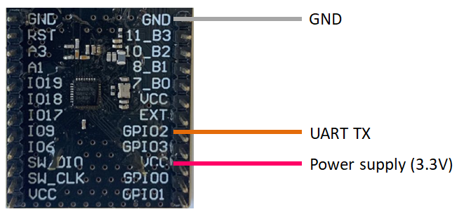

4 Quick-Start Guide
This guide walks through the offered solution to help anyone get started with Direction Finding, especially Direction Finding based on AoA.
4.1 Setup
The whole demo includes 1 or more tags, 1 4x4 antenna array board and 1 PC running Windows.

Figure 4.1: Hardware Setup
Tags - CTE Transmitters
All ING9188xx based boards/products can be used as tags. Just download Peripheral LED & CTE example in SDK.
4x4 Antenna Array Board - CTE Receiver
App for the 4x4 antenna array board should already have been downloaded, which is exactly the Central CTE example in SDK with
PRO_MODEdefined.The top side of the board (shown in the left of Figure 4.2) should face tags, but the opposite side.

Figure 4.2: Antenna Array Board
PC
1 PC running x64 Windows 10 or newer with a mainstream desktop CPU is recommended.
From the main menu of
Wizard, select “Tools” -> “More” -> “Realtime Locating Demo (DX12)”. If the program could not be started, install Microsoft Visual C++ Redistributable packages2 for Visual Studio 2022, and try again.If the PC is running elder Windows version than 10, then select “Tools” -> “More” -> “Realtime Locating Demo (OpenGL)”. If the program could not be started, install Microsoft Visual C++ Redistributable packages for Visual Studio 2022, and try again.
Python3 3 is another required piece of software. It’s recommended to use a packge manager for Windows - Anaconda4 , Chocolatey5, etc. - to install Python. Use below commands to install additioal required Python libraries:
pip install pyserialUART2USB
A UART2USB kit is required to connect the antenna array board and PC. Hardware connection is shown in Figure 4.3:
- GPIO2 is used for UART transmission
- Antenna array board is powered through VCC & GND
- 3.3V is recommended for VCC
Figure 4.3: Connect Array Board to UART2USB (PC)
4.2 Run the Demo
After all hardware components are ready, the demo can be started.
From the main menu of Wizard, select “Tools” -> “More” to start Real-time Locating Demo.
There are two variants, one built against DirectX 12, and the other OpenGL. Both share the
same functionalities, but have subtle differences on GUI appearance and system dependencies
as summarized in Table 4.1.
| Variant | Windows | Support of High DPI display |
|---|---|---|
| DirectX 12 | Windows x64 (>= 10) | Excellent |
| OpenGL | Windows x64 | Not good |
Find the COM port of the UART2USB kit in Windows Device Manager. Take “COM7” as an example.
Open a console (prompt, or terminal) window, make sure that the Python executable is in the
search paths, use cd command to change directory to “RLT” which is in
SDK’s installing directory, and run following command to start feeding data to
Real-time Locating Demo:
python serial2tcp.py --port COM7Now, Real-time Locating Demo will start showing AoA results on its main window. Azimuth (\(\theta\)) and elevation (\(\phi\)) results are shown on a sky plot. The center of the plot corresponds to the zenith seen from the board, i.e., it’s right above the center of the board.
Real-time Locating Demo supports detection of multiple tags. To simplify the demo, Peripheral LED & CTE has been designed to randomly generate a new address each time it got powered on, therefore, just reset the tag, and a new tag will appear on Real-time Locating Demo. If CTE from a tag has not been received for a period of time, Real-time Locating Demo will forget the tag, and remove it from the plot.
Figure 4.4: Main Window of Real-time Locating Demo
4.3 Accuracy
Accurate measurement of accuracy should be performed in electromagnetic an-echoic chamber which is a work-in-progress.
A summary which is for reference only and subject to change:
- Average azimuth error: +/- 3°
- Best and worst-case azimuth errors: +/- 0° and +/- 10.5°
- Average elevation error: +/- 7.4°
- Best and worst-case elevation errors: +/- 0.1° and +/- 22.8°
4.4 Trouble Shooting
Real-time Locating Demo shows nothing
Use other COM tools to check if there are lots of data received from the array board
If Yes, maybe there are compatibility issues between
pyserialand the UART2USB kit.Try another UART2USB kit. And check tips below for a better test environment.
If No, check if the tag is working properly
The chip series must be ING9188xx or ING9186xx. ING9187xx won’t work.
Real-time Locating Demo shows wrong results
Rotate & move the tags slowly to see if there are good positions where Real-time Locating Demo gives good results
Make sure that the array board is not upside down
Re-start Real-time Locating Demo with command line parameter
-plot, then it will show the SNR on each antenna. If SNRs are all lower than 10dB, follow below tips for a better test environment:Test in a large & open environment. Desktop environment where there are lots of things reflecting or blocking radio waves will worsen AoA results significantly.
Use highest transmission power in tags. The highest Tx power is already used in the SDK example. The antennas in tags should be checked.
If SNRs are all excellent, contact us for further technical support.